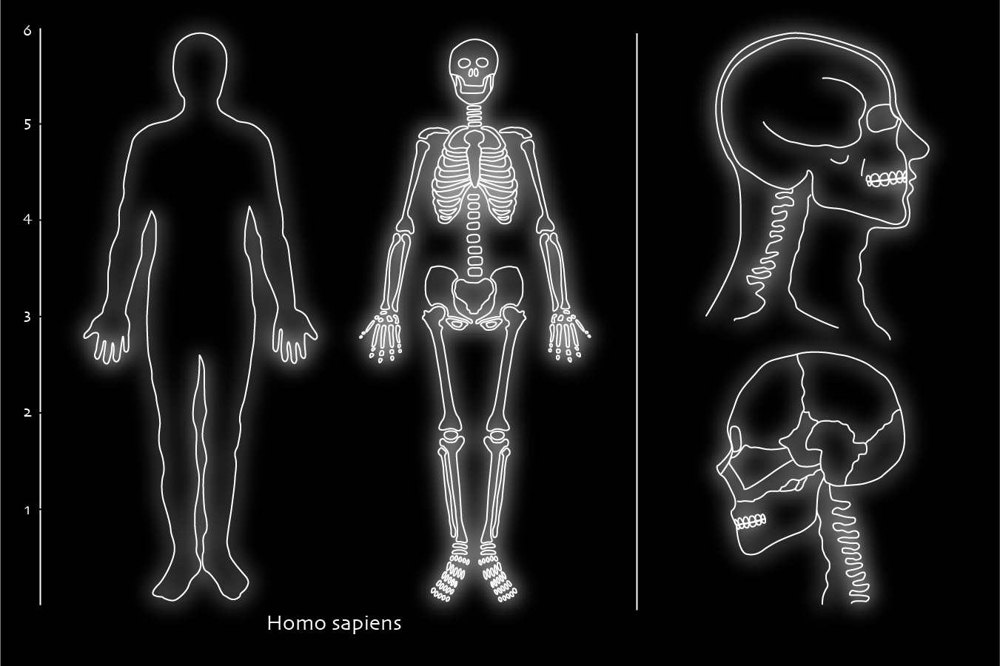

Project 1
A Visual Message for the Inhabitants of Other Celestial Bodies 
For my first project, I was tasked to create a design that could comminicate a message to celestial beings. I decided to take more scientific approach in educating them about human anatomy. This would educate to the celestial beings on what humans look like on the inside. I illustrated the internal skeletal structure and a close up of the head in more specific detail. I chose to illustrate these diagrams with line art because it would be easier to understand universally. In addition, I also created a scale to show how tall we usually are and included the scientific name of our species in case they could learn to decode it.